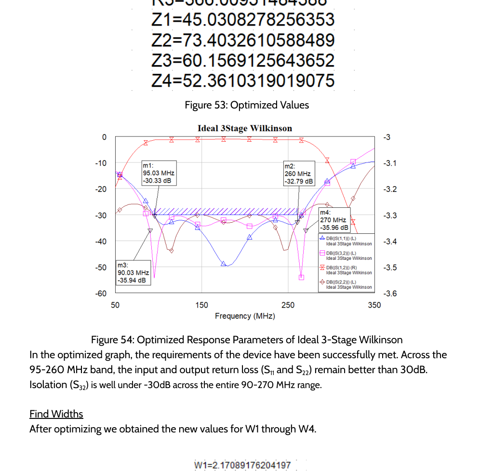
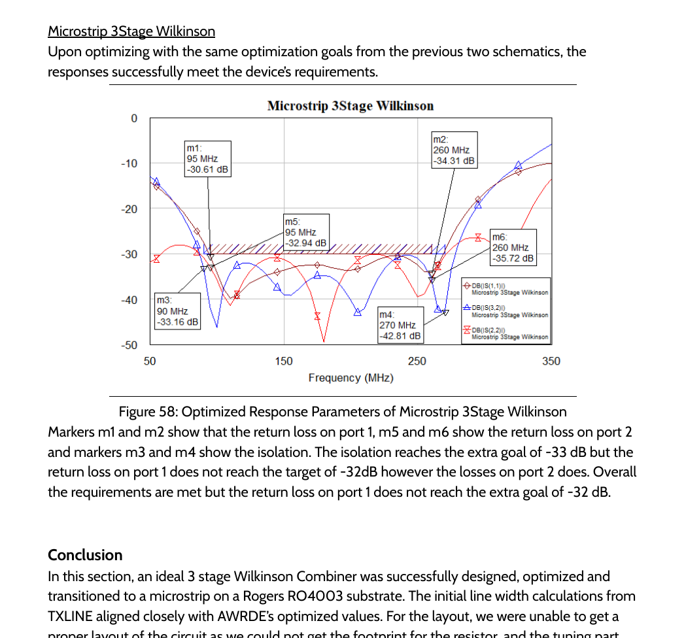

Initial calculations
Used analytical calculations, MATLAB and TXLINE to establish starting transmission-line parameters and check the calculated dimensions.
A three-stage Wilkinson power divider/combiner project exploring how transmission-line design affects signal reflections, isolation and operating bandwidth.

This project compared single-stage and multi-stage Wilkinson designs, with a focus on matching and isolation across a specified frequency band. I used calculations and simulation to develop the circuit, then translated the transmission-line impedances into microstrip dimensions.
The single-stage design provided a simpler starting point. The three-stage structure added more parameters to tune, allowing the response to be adjusted across a wider band. I compared the simulated responses before developing the microstrip model.
The work combined analytical calculations, circuit comparisons and simulation-based refinement.
Used analytical calculations, MATLAB and TXLINE to establish starting transmission-line parameters and check the calculated dimensions.
Compared single-stage and multi-stage matching structures to examine how the number of sections affected bandwidth and the simulated response.
Used AWRDE to tune circuit parameters and evaluate return loss and isolation across the target frequency range.
Converted the ideal transmission lines into microstrip dimensions on Rogers RO4003 and evaluated the resulting model in simulation.
These plots show simulated performance after optimization. They are not measurements from a fabricated board.


The project reached the circuit and microstrip simulation stage. Final PCB layout refinement remained limited by the available resistor footprint. A fabricated board and hardware measurements were outside the completed scope.